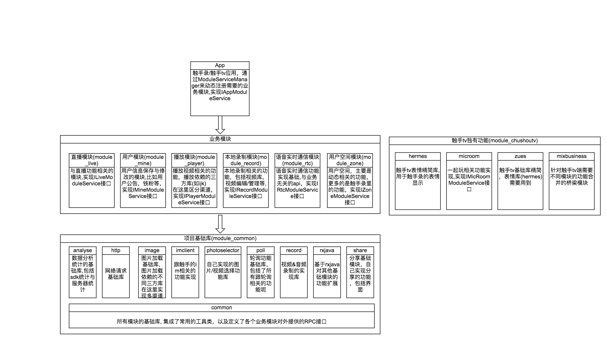

一、概述
本文档是说明项目的架构与功能点所涉及的代码说明
二、项目架构
1. 概览图

2. 介绍
本项目分为几个部分
基础模块: 包含与业务无关的各种基础功能，比如http请求，图片加载，数据统计等，这些基础库有些也区分出了多渠道，为了区分不同的第三方开源库，比如图片加载，以前触手录用的是uil,触手tv改用了fresco, 那image模块就根据使用的开源库不同，相同的接口用不同开源库的实现，来达到不用修改其他模块对图片控件的使用而在不同三方库的切换。其他模块以后有需要也可以参照该方式来实现。该模块定义了其他基础模块以及业务模块的接口
业务模块: 业务模块就是跟开发的应用有关系了，在使用基础模块的基础上，开发根据产品需求来实现不同业务场景的模块，目前的业务区分是我在分析触手录的所有功能区分出来的一种分组，以后也可能会有调整，不要把自己的观念固化了。在这些模块会实现在common里定义的rpc接口，表示这些模块允许其他模块调用的功能。当然，这些接口也是基于目前需求添加的，以后如果有新需求，就可以添加新的接口，但是有一个原则，就是权责分明，直播模块的功能接口，不能写到本地录制的rpc接口中。业务模块基本都是多渠道，因为触手tv跟触手录的ui风格完全不同，不过大部分只是res的区分，部分模块逻辑的区分，改动也不算多，这个需要自己去考量怎么样做到最大可能区分出不同点，保留相同点, 这样在修复bug时只需要修改最少地方。
应用模块: 应用项目就是最终展现在手机上的应用，在这个项目里，就是各种业务模块的组合使用了，这个单独区分出来的原因是，有些功能是触手录的，但是触手tv并不需要，比如触手录的主页，所以把这个单独提取出来，实现IAppModuleService，表明应用支持的方法，其他模块也可以调用应用模块的功能。通过ModuleServiceManager获取应用对该接口的实现。
Tips: 在通过ModuleServiceManager获取其他模块的服务时，必须加空判断，因为这个是ModuleServiceManager.registerService动态注册的，如果没有注册，那你就获取不到对应模块的实现实例。
三、Gradle的说明
有些同学对gradle并不是很了解，但是在本项目中，会经常对gradle文件修改，所以简单说明一下
setting.gradle 这个文件是整个项目的模块配置文件，在这个文件里，声明哪些模块需要被包含进来，就是被识别成一个个项目，在我们开发完成之后，理论上可以全部注释掉，仅仅保留:app，在需要修改某个或多个模块的时候，在这里把对应模块的注释放开即可。
utils.gradle 管理maven上传版本信息以及依赖第三方库的简化写法，实现了一个commonCompiles方法，以后新增依赖其他开源库，也在这里面定义
commonCompiles('espresso', 'junit', 'appcompat-v7', 'rxjava2', 'rxandroid2', 'retrofit2', 'okhttp3', 'fresco', 'permission')
source.gradle 上传maven同时上传源码的脚本，需要在每个子项目的最后apply, 在项目根目录apply无法识别android属性
四、关于混淆
以前的混淆，都是放在应用模块下来实现混淆，现在区分出了各个模块，在模块下面直接定义好自己模块需要的混淆配置，然后在自己模块的build.gradle使用consumerProguardFiles声明库文件的混淆配置，在应用使用该模块时，库模块的混淆配置会被保留
五、模块代码细则
直播模块(module_live):
- 直播设置: tv.chushou.record.live.setting
- 在线直播: tv.chushou.record.live.online
- 直播成就: tv.chushou.record.live.glory (静态h5在assets下)
- 直播服务: LiveRecordService
- 直播浮窗: OnlineLiveFloatView
个人信息模块(module_mine)
- 直播公告: tv.chushou.record.mine.announce
- 登录: tv.chushou.record.mine.login
- 铁粉列表: tv.chushou.record.mine.loyalfans
- 用户信息编辑: tv.chushou.record.mine.useredit
- 用户信息展示: tv.chushou.record.mine.userinfo
依赖的Activity: tv.chushou.record.mine.MineSimpleActivity
视频播放模块(module_player)
- 已上传视频的播放: tv.chushou.record.player.uploadedvideo
本模块只要触手录里使用，触手tv实现IPlayerModuleService接口，然后调用他们的播放视频方法
本地录制模块(module_record)
- 视频编辑: tv.chushou.record.recorder.edit
- 视频管理: tv.chushou.record.recorder.manager
- 本地录制: tv.chushou.record.recorder.record
- 本地录制设置: tv.chushou.record.recorder.settting
- 视频库: tv.chushou.record.recorder.store
- 视频上传: tv.chushou.record.recorder.upload
- 本地录制服务: LocalRecordService
- 视频上传服务: UploadService
- 本地录制浮窗: LocalRecordFloatView
依赖的Activity: tv.chushou.record.recorder.RecorderSimpleActivity
实时通信模块(module_rtc)
- 实时通信引擎: tv.chushou.record.rtc.engine
- 编译混音动态库的ndk项目: ./agora-apm
- 使用的声网sdk版本纪录: ./agora
空间模块(module_zone)
- 游戏分类: tv.chushou.record.zone.category
- 动态评论详情: tv.chushou.record.zone.comment
- 用户空间首页: tv.chushou.record.zone.home
- 粉丝留言: tv.chushou.record.zone.leaveword
- 图文动态详情: tv.chushou.record.zone.textdetail
- 图文动态编辑: tv.chushou.record.zone.textdetailedit
依赖的Activity: tv.chushou.record.zone.ZoneSimpleActivity
触手录应用(app)
- 触手录首页: tv.chushou.record.home.main
- 触手录闪图: tv.chushou.record.home.splash
- 触手录系统消息列表: tv.chushou.record.home.sysmsg
依赖的Activity: tv.chushou.record.AppSimpleActivity
触手TV测试demo(app_tv)
用于模拟触手tv里大部分的触手录的功能，测试通过之后，在触手tv只是修改下依赖的模块的版本号，再测试一下即可，避免运行触手tv比较耗时的问题。
六、常用的类
1. common
- BaseActivity: 基类activity, 处理了权限申请, 状态栏修改
- BaseFragment: 基类fragment
- BasePtrLmFragment: 基类上拉刷新与下拉加载更多列表页面
- BasePtrLmLoadFragment: 基类上拉刷新与下拉加载更多列表页面，多个加载状态页面
- TitleActivity: 统一标题activity, *SimpleActivity都是继承自它
- ErrorStatus: 错误状态码
- PageStatus: 页面状态码
- WeakHandler/WeakAsyncTask: 避免内存泄漏的handler与asynctask
- FloatView: 浮窗基类,统一处理了移动和转屏的功能
- C: 常量定义类
- AppUtils: 应用工具类
- DeviceUtils: 设备相关工具类,如文件夹，屏幕大小等
- T: toast统一调用工具类，自定义toast也在这里定义方法来显示
- Widget:
- adapter/CommonRecyclerViewAdapter: 简化recycleview的adapter的使用，不需要每次都要定义新的adapter类
- adapter/AutoSpaceGridLayoutManager: 自动计算横向列中间距离的layoutmanager
- loadmore/LmRecyclerView: 加载更多的recycleview
- custom/EmanateView: 放炮动画控件, 贝塞尔曲线的图片移动
- custom/GiftProgressBar: 直播间礼物水柱控件
- custom/CameraView: 显示摄像头画面的view
- custom/GuideView: 引导图控件
- custom/PictureWall: 图片墙控件
- custom/SimpleGridView: 简单的gridview模拟控件
- dialog/RecAlertDialog: 确认弹出框, 基本上的弹窗都可以使用它来实现
- dialog/RecCommonDialog: 写自定义弹出框的基类, 基于AlertDialog, 实现了默认大小和动画, 子类重写getWindowSize更改大小
- dialog/RecDialogFragment: 写自定义弹出框的基类, 基于DialogFragment
- textview/DrawableResize*: 在文本四周有图片显示的文本控件，自定义四周控件的大小
- textview/charsequence: 文本设置使用到的图文混排的span
2.http
- JSInterface: 处理h5与native代码的类
- QiNiuUploadHelper/QiNiuUploadTask: 七牛上传工具类
- CServer: 应用环境地址配置
3.photoselector
- RecMediaSelector: 图片/视频选择工具类，通过AppUtils的setMediaSelector/getMediaSelector方法设置和获取，在使用时做空判断
4.poll
- LiveRoomChatPoll: 直播间聊天信息轮询任务
- LiveRoomHeartbeatPush: 直播间心跳轮询
- LiveRoomPointPoll: 直播间水柱分值轮询同步
- LiveRoomQosPush: qos轮询
- UnReadCountPoll: 未读系统消息轮询
5. record
- AudioWorker: 音频采集工作线程
- AudioEncoderCore: 音频采集编码工具类
- VideoWorker: 视频采集工作线程
- VideoEncoderCore: 视频采集编码工具类
- RecordService: 音频&视频采集服务
七、关于版本号
修改模块的流程
- bug修复完成之后, 先更新代码，保证你的代码跟svn上其他人提交的代码合并成最新的
- 提交到maven库
- 再提交自己的代码到svn
Tips: 不要每次都需要别人给你们检查, 打包给测试又说没有打包修复的代码!!
release版本的更新
- 在开发阶段，如果修改的模块的版本号是relaese,就在它的基础上+1, 添加后缀-SNAPSHOT，更改为快照版本，说明你有改动，如果已经是快照版本了，就不需要修改了
- 更新触手tv的版本，修改为你的版本号
- 在触手tv准备打正式包给测试的时候，更新快照到release库
- 更新触手tv的依赖为提交的release版本号
tv端发版本后的工作
- 纪录下本项目当前svn版本号
- 如果需要在上一个发布版本的基础上进行修改，checkout出svn那个版本号的代码进行修改，不需要再单独拉个分支占用服务器空间, svn已经包含了该功能